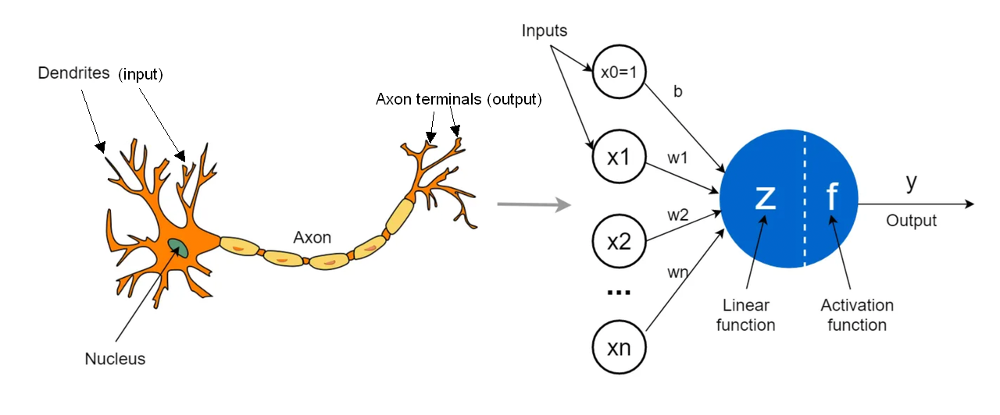

Where is AI heading - part 2/4: History of AI
Initially I planned to use this 2nd post to dive straight into Large Language Models (LLMs). But then I realized that since my goal is to educate people and start from the basics, it would be much more useful to first give some historical context. After all, one of the issues in public debate about AI is that a lot of people think that AI is synonymous with chatbots; the truth is that the term of "AI" has been used over many decades to describe very different models and approaches - and those different approaches have very different implications for our society, both in terms of risks and how they might affect our future.
Inspiration for AI
Humans have always been fascinated by how our brains work, and as our understanding of it evolved, scientists started thinking about whether it would one day be possible to imitate the brain artificially.
Neurons are essentially the computational building blocks of the brain: they receive inputs (chemical and electrical) from multiple sources, combine them into a single signal, and if the signal is strong enough, they fire an output that reaches the next neurons.
Some interesting facts about neurons in our brains and bodies:
An adult human brain contains approximately 80 billion neurons.
A single neuron may be connected to 1000-10000 other neurons.
Neurons form networks that encode memories, shape personalities, drive decisions, and process the sensations of touch, taste, sight, smell, and sound.
The longest neuron in human body can be over a meter long (from bottom of spine to toes). However, most neurons in brain are less than a millimeter in length.
In 1957, Frank Rosenblatt came up with perceptron, a simplified model for a single neuron. Just for illustrative purposes, compare a neuron in a brain and an artificial neuron:

Biological neuron vs artificial neuron. Source: Towards Data Science.
Artificial neurons (specifically in the original perceptron model) follow the same core principles as biological neurons, but in simplified mathematical form. Artificial neurons:
receive input values (positive or negative numbers);
combine those values linearly using specific weights;
produce an output if the combined value passes a certain threshold (otherwise, the output is 0).
The same basic framework powers the vast majority of neural networks used today (including LLMs). The main difference is how the third step works: modern networks swap out the strict "all-or-nothing" threshold for smooth activation functions, which scale smaller values down rather than setting them to 0.